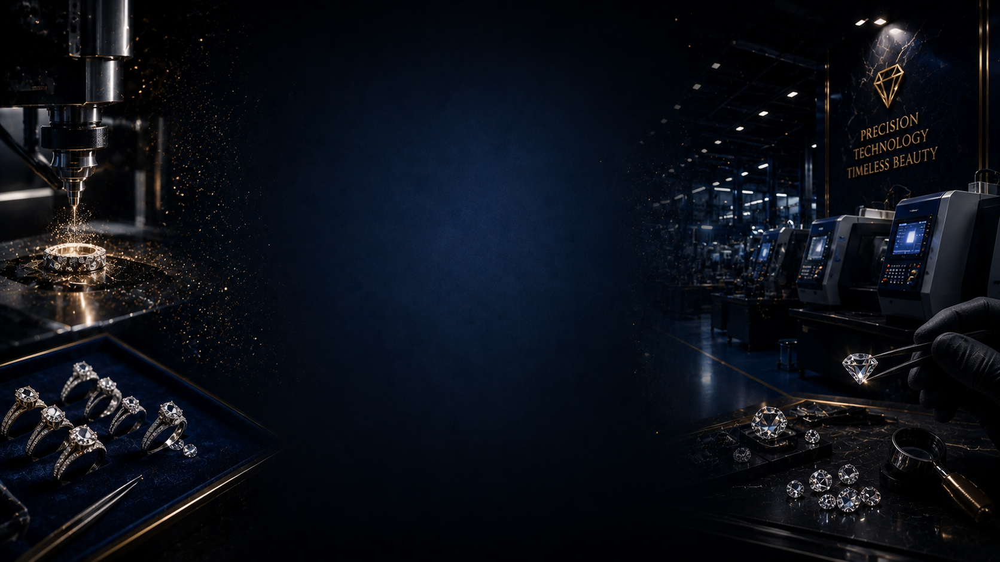

Fine jewellery manufacturing cannot depend on chance. It requires trained hands, experienced eyes, clear planning, quality checks, and honest communication at every step.
Design direction, karat, finish, product category, customer preference, timeline, and commercial purpose are all understood before production moves forward — so the jewellery works for the retailer's customer, showcase, and market.
We review proportion, comfort, durability, stone placement, setting strength, weight balance, and ease of wear — refining anything that could affect strength, comfort, or production practicality.
Yellow, white, and rose finishes each behave differently during production, polishing, and setting. Our team plans the manufacturing process around each karat's specific behaviour.
Machines support the process, but the final quality rests with artisans whose hands have been trained over years, not weeks. Every curve, edge, and joint carries that discipline.
Diamonds are placed by artisans who've spent years perfecting alignment and security — so brilliance and durability are never a trade-off.
Every surface, edge, and closure is finished by hand and checked against a standard our artisans have spent years earning the right to hold. Nothing leaves unpolished — literally or otherwise.
Every piece is checked against the same standard, every time — strength, comfort, setting security, and finish — corrected before delivery, never after.
As a BIS hallmark registered company and GJEPC member — with IGI and GIA certification on our diamonds — documentation is treated as an essential part of professional manufacturing, not a separate formality.
Before dispatch, every piece is reviewed as a complete, finished product — ready to carry the retailer's name and confidence into the showcase.
"Because our manufacturing is handled in-house at our Andheri East facility, we know where the piece is made, who is working on it, and whether it needs correction before moving ahead."